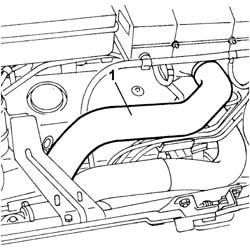
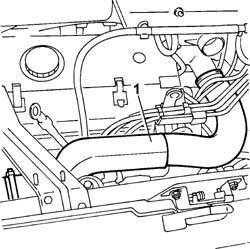
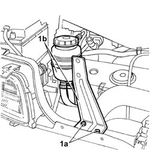

1060E20 FUEL -R.R. CUT-OFF SOLENOID VALVE
- Path
- Procedures > 10 ENGINE UNIT > 1060 DIESEL INJECTION SYSTEM > 1060E DIESEL PRESSURE PUMP > 1060E20 FUEL -R.R. CUT-OFF SOLENOID VALVE
- Kind
- repair procedure (removal / refitting; the operation number is the code)
- Applies to
- engines: 2.8 JTD 8V; all production periods
- Interactive page
- https://sloeber94.github.io/elrnDB-fDct/en/#/244000832
Applies to: engines: 2.8 JTD 8V; all production periods
 Removing
Removing
 Refitting
Refitting- Disconnect the negative battery terminal.
1. On both sides, by adjusting the retaining bands, disconnect and remove the pipe between the intake manifold and the air/air heat exchanger.

Applies to: engines: 2.8 JTD 8V; all production periods
1. On both sides, by adjusting the retaining bands, disconnect and remove the pipe between the turbocharger and the air/air heat exchanger.

Applies to: engines: 2.8 JTD 8V; all production periods
1. Undo the fixing bolts (1a) and move the power assisted steering fluid reservoir and mounting bracket (1a) away from the work area.

Applies to: engines: 2.8 JTD 8V; all production periods
1. Disconnect the electrical connection for the injection pump third piston deactivating solenoid valve.
Description | Connector | |
|---|---|---|
1 | Injection pump third piston deactivation solenoid valve | L005 |
2. Undo the retaining bolts.
3. Remove the injection pump third piston deactivating solenoid valve from the housing.
Applies to: engines: 2.8 JTD 8V; all production periods
Refitting
Removing- Place the injection pump third piston deactivating solenoid valve in position.
- Tighten the bolts fastening the injection pump third piston deactivating solenoid valve.
- Connect the electrical connection for the injection pump third piston deactivating solenoid valve.
Description | Connector | |
|---|---|---|
- | Injection pump third piston deactivation solenoid valve | L005 |
- Place the pipe from the turbocharger to the air/air heat exchanger in position and secure it using the retaining bands.
- Place the pipe from the intake manifold to the air/air heat exchanger in position and secure it using the retaining bands.
- Connect the negative battery terminal.